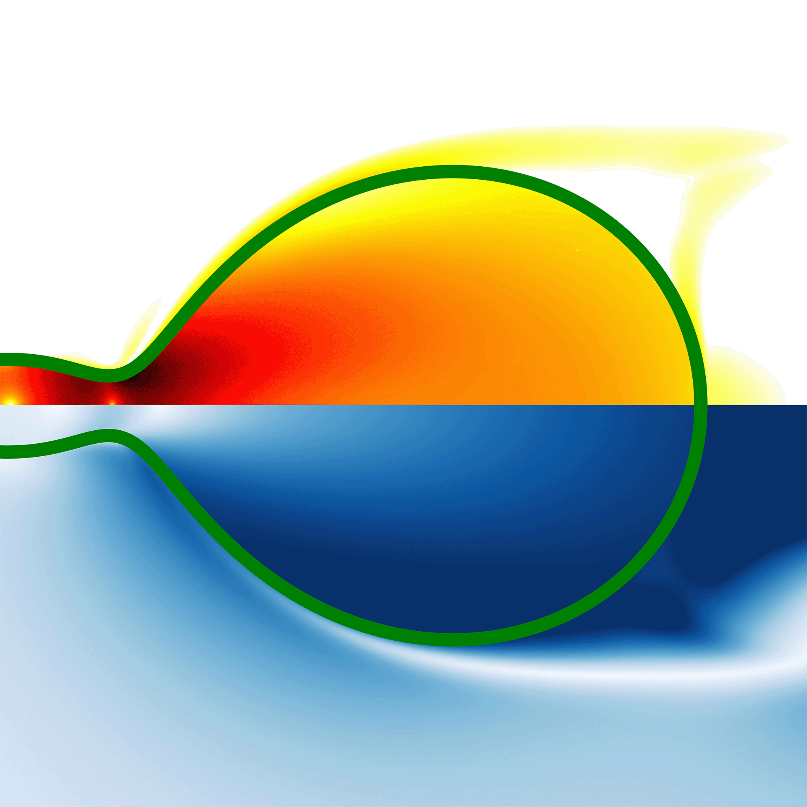
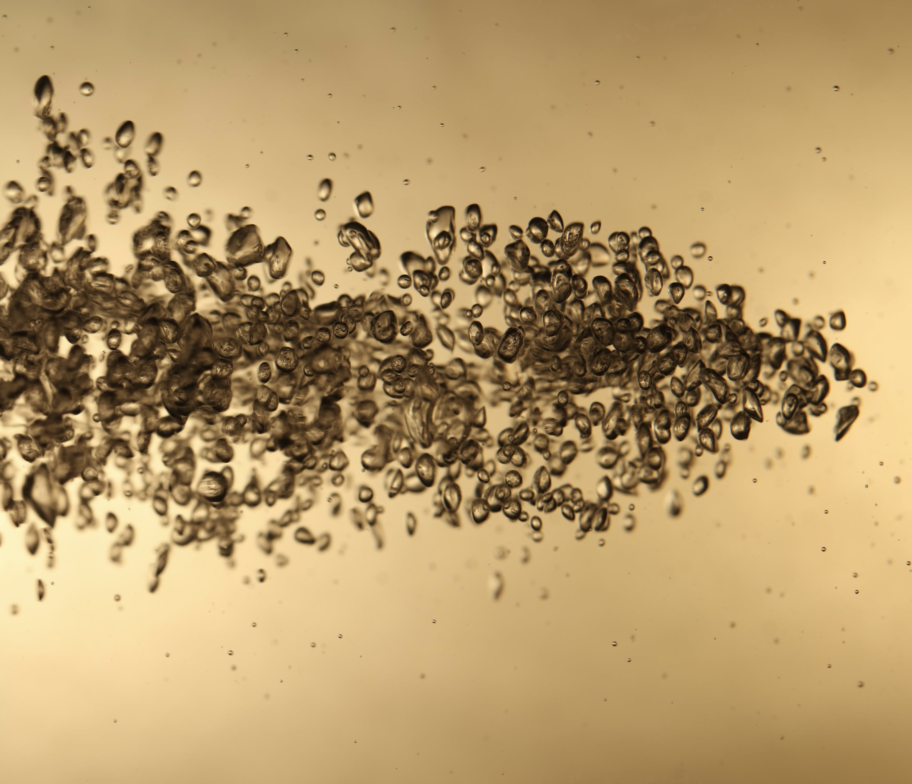
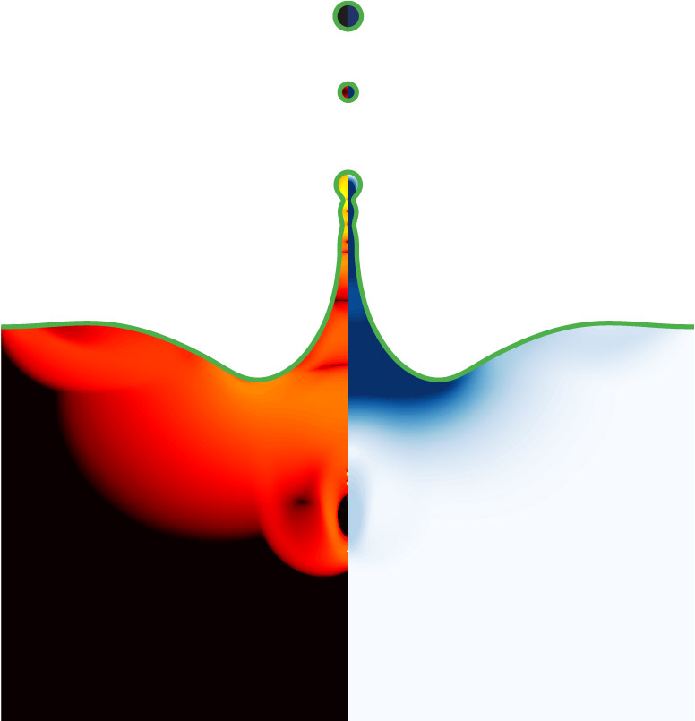

CoMPhy Lab · Design System · v1.0
Computational Multiphase
Physics — Design System
A shared visual language for the lab: the group website, per-paper microsites, seminar pages, and internal tools. It pairs the lab's signature four-stop gradient and Cormorant Garamond display with a warm paper surface, ink text, and a deep-teal editorial accent borrowed from sl25.
00 · INTRODUCTION
What this is, and what it's for
A short read before you copy-paste anything. The system is deliberately narrow — it tells you what to do in the 80% of cases so you can improvise on the 20%.
Principles
Scholarly, warm, not corporate
- Paper before pixels. Warm off-white (
#f3efe8) is the default body — not pure white. Screens should feel like good publication layout. - One accent, not four. Deep teal
#254c4ais the interactive accent. The brand purple / blue / coral stay for content emphasis. - Serif headlines earn their weight. Cormorant for the hero only; Source Serif 4 for every other heading. Sans-serif for UI.
- Restraint beats density. 28-px panel radius and 32-px background grid give air. Do not fill it.
Voice
Clear, technical, a little dry
Write like a good methods section: plain words, specific nouns, no marketing verbs. "We investigate non-Newtonian free-surface flows." Not "Unlocking the secrets of fluids."
Do
Bubble bursting seeds jet instability above Oh ≈ 0.03.
Don't
Discover the fascinating world of bursting bubbles!
01 · COLOR
Brand, ink, and paper
Brand hues carry identity; ink is for text; paper is for surfaces. Every token reads from a single CSS variable — flipping data-theme="dark" rewires the palette without touching components.
Brand & accent
Brand purple--c-brand-purple#68236d · H1, logo mark
Brand blue--c-brand-blue#0056b3 · H2, links
Accent coral--c-accent-coral#cf4900 · <strong>, DOI
Accent teal--c-accent-teal#254c4a · interactive CTA
Accent violet--c-accent-violet#4c6ef5 · tags, badges
Accent red--c-accent-red#ff6b6b · hero gradient 1
Paper & ink
Paper--c-paper#f3efe8 · body background
Surface strong--c-surface-strong#fffdf9 · inner cards
Ink strong--fg-strong#0f0c08 · headings on paper
Ink body--fg-1#1f1a15 · paragraphs
Ink muted--fg-2#625648 · captions
Ink soft--fg-3#857867 · placeholders
Signature hero gradient
4-stop · 90deg · red → purple → violet → deep violet
Only use on the homepage hero and the lab name. Clips against serif type via -webkit-background-clip: text. Do not put it on UI chrome or body text.
02 · TYPOGRAPHY
Three families, one job each
Cormorant for the hero. Source Serif 4 for every other heading. IBM Plex Sans for body, UI, and data. IBM Plex Mono for code, DOIs, and emails.
Worthington jet
We investigate non-Newtonian free-surface flows
Soft-matter singularities
Bubble bursting
Local instabilities drive fast, often dramatic flow dynamics. Our goal is to expose the universal mechanisms governing singular events in soft matter.
From elastoviscoplastic bubble bursting and elastic sheet break-up to champagne bubble bursting and classical Taylor–Culick retractions, non-Newtonian fluids serve as model systems to explore the fundamentals of continuum mechanics.
Picture: Worthington jet formed due to bursting bubble. Simulation run on Basilisk C, Re ≈ 200.
Featured research · March 2026
vatsal.sanjay@durham.ac.uk 10.1039/D5SM01078K
03 · SPACING & SHAPE
Scale, radii, elevation
A 4-px base scale, with the useful middles (12, 24, 48) filled in. Panels lean large (28 px radius) — do not nudge it smaller to fit more in.
Spacing scale
s-14 pxs-28 pxs-312 pxs-416 px · default gaps-524 pxs-632 px · panel paddings-748 pxs-864 px · between sectionss-996 px · hero padding
Radii & elevation
r-xs · 6
r-sm · 12
r-md · 18
r-lg · 28
pill
shadow-sm
shadow-md
shadow-soft · panels
shadow-lg
04 · COMPONENTS
The working set
Buttons, chips, inputs, cards, and the content blocks you actually reach for — paper cards, news rows, team tiles. Everything reads from tokens.css.
Buttons
btn (teal) is the single primary. btn-pill (blue) is kept for the homepage hero for legacy — use sparingly. btn-ghost is for inline/secondary actions.
Chips & tags
OA
Soft Matter · 2026
Non-Newtonian
DOI
PRL
Inputs
Valid range: 1 ≤ We ≤ 10³
Valid range: 10⁻³ ≤ Oh ≤ 10²
Pattern · Homepage hero

Picture: Worthington jet formed due to bursting bubble
About
Soft-matter singularities
Topological transitions in fluid systems where local instabilities drive fast, often dramatic flow dynamics.
Read more →
Latest
Impacting spheres: from liquid drops to elastic beads
Jana, Kolinski, Lohse, Sanjay — Soft Matter 22, 2226 (2026) · cover
Pattern · Featured paper

Impacting spheres: from liquid drops to elastic beads
Pattern · News feed
12Mar 26
Publication
Read
Jana, S., Kolinski, J., Lohse, D. & Sanjay, V. published in Soft Matter; issue cover article.
28Feb 26
Talk
Video
Ayush Dixit presents "Simulating respiratory droplet formation: the role of non-Newtonian fluid dynamics."
01Jul 25
Move
Join us
CoMPhy Lab is moving to Durham University — joining the Condensed Matter Physics section of the Department of Physics.
Pattern · Team
VS
Vatsal Sanjay
PI · Durham
AD
Ayush Dixit
PhD student
SJ
S. Jana
PhD student
Pattern · Metric cards
Re = 316
Reynolds number
III
Impact regime
β = 2.14
Max spreading diameter
05 · BRAND MARKS
Logos and partner marks
The lab mark always sits on a lightly tinted purple header (--glass-header) or a dark surface. Partner logos (Basilisk, Physics of Fluids, Durham) go in the footer, white or monochrome only.

Primary mark · on paper
Primary mark · on brand tint
Primary mark · transparent

Partner · Basilisk C

Partner · Physics of Fluids
Partner · Durham University
The wordmark and partner marks ship as white-on-transparent assets. The system inverts them automatically on the light paper surface via .invert-on-light; in dark mode the tile flips to a dark bed and the original white rendering is restored.
06 · CHROME
Header, navigation, command palette
A single-row translucent header on a purple tint; nav items as soft pills; command palette (⌘K) as a mono-typeset pill on the right.
CoMPhy Lab
07 · USAGE
Putting it on a page
Copy or link the self-host pack (fonts/) plus tokens.css, and you have 90% of the system. Everything else is three class names: .panel, .btn, .chip.
<link rel="stylesheet" href="/fonts/fonts.css"> <link rel="stylesheet" href="/tokens.css"> <section class="panel"> <span class="eyebrow">Featured research</span> <h2>Bubble bursting in complex fluids</h2> <p class="lede"> Non-Newtonian rheology reshapes the Worthington jet... </p> <a class="btn" href="...">Read the paper</a> </section>
Do
- Use one accent (teal) for interactive elements.
- Put equations and DOIs in
.copyable. - Let the paper body show through — panels are translucent on purpose.
- Keep the hero gradient for the lab name and homepage only.
Don't
- Do not shrink panel radius below 18 px.
- Do not introduce new accent colors — extend the violet/coral/purple family.
- Do not put the hero gradient on UI chrome.
- Do not use pure
#fffas a page background.